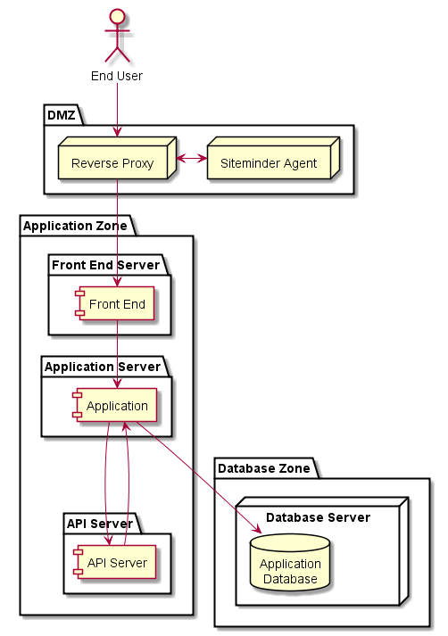
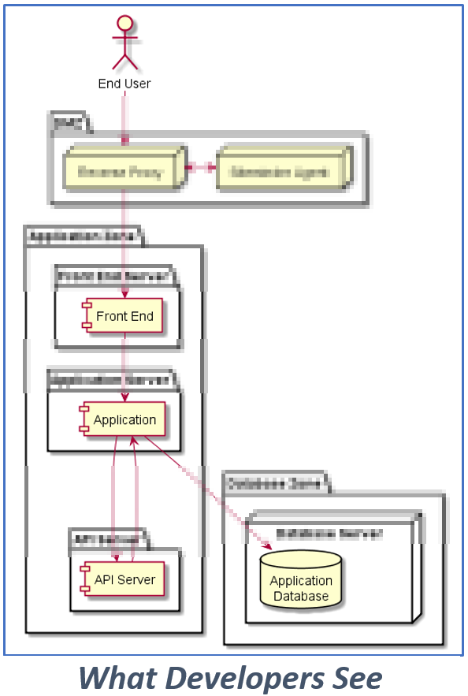
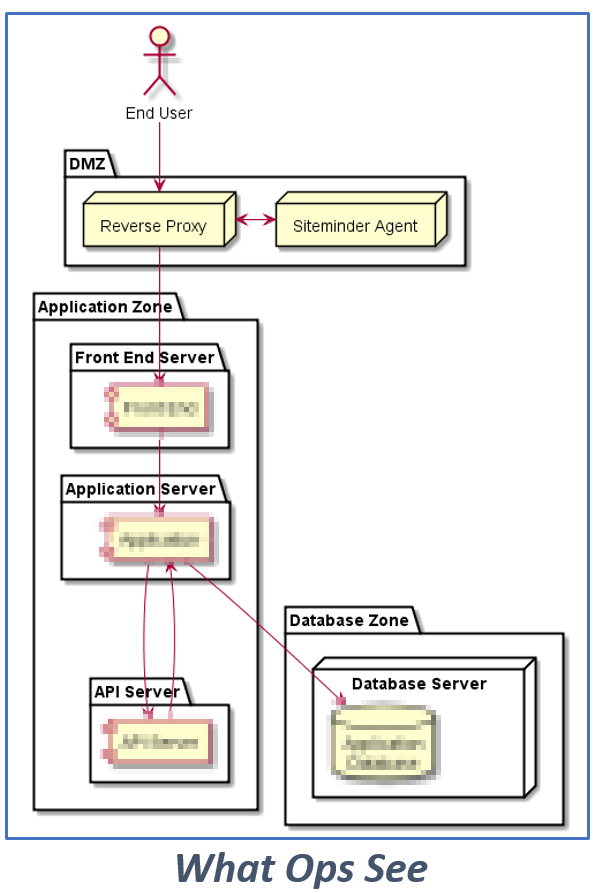
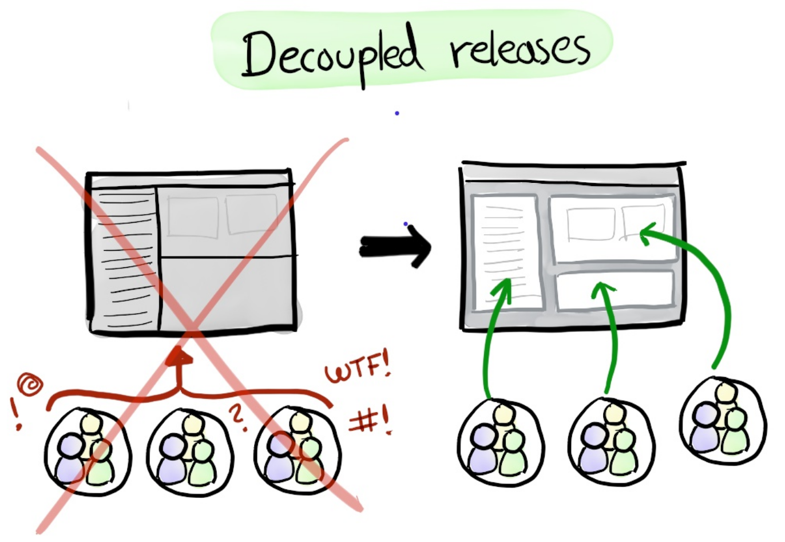

class: center, middle # An OCIO Digital Literacy Course ## DevOps For Product Owners ### Part 1: The Big Questions <img src="images/QSL-C3I Titles Border.png" alt="Cloud Compass Computing, Inc." width="25%" > Stephen Curran, Cloud Compass Computing, Inc. --- # DevOps For Product Owners ## Part 1: The Big Questions 1. Introductions 1. What is DevOps? 2. What is the Cloud? 3. What is the Impact on Business? --- # Approach The course is a mixture of presentation, labs and discussion. Please, feel free to jump in at a time with questions, comments, suggestions, snores, etc. The goal is the material is presented in _your_ context. There will be a couple of labs that allow you to say - *_I done DevOps_* Lots of opportunity for you to drive the course direction. Logistics... * Any constraints on time? * Washrooms * Food --- # Introductions ##Who are you? * Project * Role * Experience with Digital Services? ## Me?? ##### Stephen Curran, _Cloud Compass Computing, Inc._ * Tightrope guy - business and technology * All about the delivery * DevOps since before it was DevOps * BC Government Projects ICM, JAG and MOTI - _School Bus_ and _Hired Equipment_ ??? * Engineer – walking between Tech/Business * Software Development Management – Application Delivery * Biggest – US Federal Government HR System – Avue Central * Classification, Pay Grades, Recruiting, Performance Management * 2.5M Job Applications per year * Entry Hiring for Dept. of Justice Lawyers, Capital Police Officers * Forest Service annual Fire Hire * Crazy management BC Government – ICM, PMO, Courts Projects Pathfinder Projects - School Bus, Hired Equipment --- # What is DevOps? DevOps (a clipped compound of "software DEVelopment" and "information technology OPerationS") is a term used to refer to a set of practices that emphasize the collaboration and communication of both software developers and information technology (IT) professionals while automating the process of software delivery and infrastructure changes. It aims at establishing a culture and environment where building, testing, and releasing software can happen rapidly, frequently, and more reliably. .footnote[.red.bold[*] Wikipedia] Well, that doesn't help... ??? Unfortunately - not a straight forward "product"/"thing" * Cultural component * Automation and tools * Continuous Improvement So lets hold off on "What is it" and go to... --- # Why is DevOps? ### Roots - merging the Work of Developers and Operations Teams * Developers - make the code * User Interface (UI), Business Logic/Rules, Integrations * Database (sometimes) * Or a Database Group does the design * Developers implement and populate the database * Ops - runs the code * Servers * Networks * Databases --- # Backup a bit - what's an app? .right-column[<img style="height:100%;" src="images/webarchitecture.png">] -- .left-column[ ## Examples * .NET + front end + database * Java + front end + database * MEAN (Mongo Express Angular Node) * Django (Python + front end + database * Front End: Bootstrap, React, Backbone, Angular, etc. * Database: Postgres, SQL Server, Oracle, Mongo ] User Stories, usability, logic, rules... --- # Backup a bit - what is an application? .right-column[] -- .left-column[ ## Ops View * Networking zones * URLs - _https://myapp.gov.bc.ca_ * Authentication - siteminder * Encryption - SSL * Firewalls * Servers * Storage ] *Times three*: Dev/Test/Prod --- # Making it Work - Theory <img src="images/sdlc_waterfall_model.jpg" alt="Waterfall Design" width="65%" > Meetings, documents, agreements and requests --- # Reality .right-column[<img src="images/sdlc_waterfall_model.jpg" alt="Waterfall Design" width="100%" >] * Requirements: _change_ * Implementation: _Takes too long_ * Testing: _Skipped_ * Deployment is... ## ...Dreaded --- # What Ginger Hears... .left-column[] .right-column[] --- # Deployment ### The rubber hits the road and... #### ...so does *_The Wall of Confusion_* .center[<img src="images/overthewall.png" alt="Over the Wall of Confusion" height="350" >] --- # What goes wrong? * Developers build in their world, deliver to a different one * Each Dev creates their own development/test capability - best efforts * Execution environment doesn't match reality, either does test data * Periodically delivers code - usually at a milestone - e.g. UAT * Agile methodology SHOULD address this --- # What goes wrong? * Communication is via Word documents - the dreaded _Release Guide_ * Premise: To deploy this app, do this... * Assumption: The writer knows the readers world...impossible * Impact: * Steps are performed manually * On-the-fly adjustments are made...further invalidating the assumption * On Dev, Test and Prod ??? Example - doing home PC support - remotely --- # What goes wrong? * The _iStore_ optimization * iStores/funding force optimizations on time and cost * Method: Few servers, shared resources * Result: * Unwanted dependencies between apps # Which leads to... * The _iStore_ waste * To eliminate unwanted dependencies - over-provision - take longer, waste funds * NOTE: Particularly tough in the BC Government domain - physical vs. virtual machines --- # Which leads to... The release party night, and... .center[<img src="images/dayafter.jpg" alt="The Day After" width="75%" >] ### Ops favourite...the Day After ??? * Users can't log in * Performance is terrible * A feature no longer works * Bugs occur * Non-Functional Requirements * Performance * Monitoring * Logging * Capacity --- # The Reflex Response * We are doing it right, we just need to do it *better* next time * Test more - take longer, check _EVERYTHING_ * Except - the users still want more fixes/capabilities <img src="images/WallOfConfusionChange.png" alt="The Wall of Confusion - Change" width="60%" > --- # It's a little worse in Government .right-column[<img src="http://www2.gov.bc.ca/assets/gov/home/gov3_bc_logo.png" alt="BC Government Logo" width="50%" >] .left-column[ * Each application is a project - an event * Not a product with a lifecycle * Focus is on the application, not the delivery/maintenance of the app * Contracted teams * Each starts with own dev approach, tools * Highly variable contact with Ops - especially the first time * Limited access to data * Production type data * Production volumes of data ] --- # So...What is DevOps? Applying Lean principles to deployment: Maximize value; minimize waste <img src="images/leanprocess.png" alt="Lean Process - Continuous Improvement" width="65%" > ...using some really powerful tools ??? The shoulders of giants - continuously --- # Problem: The Release Guide * Old: Write It in Word - every step * Compile Code * Build Code - for each component * Test the Build * Install pre-requisites * Install code * Restart components * Verify components * Better: Write it as a repeatable script * Not easy - done incrementally - by lazy programmers * Even Better: Create tools to improve each step ??? Example - ICM - 24-48 hours of orchestrated activities - 10 people in a room Common - developers best effort --- # Solution: The Deployment Pipeline <img src="images/continuous-deployment-pipeline.png" alt="Deployment Pipeline" width="80%" > * Subversion, git, github - manage code * Maven, grunt - build tools * xUnit - unit test tools * Selenium, Jmeter - integration test tools * Migrations, Datical, E-F - database upgrades * Jenkins - job runner --- <img src="images/XebiaLabsPeriodicTableDevOps.png" alt="Periodic Table of DevOps" width="80%" > .footnote[Credit - Xebia Labs - https://xebialabs.com/periodic-table-of-devops-tools/] --- # Problem: The Day After ## Solution: Really Fast Releases .right-column[<img src="images/lessthan30minutes.png" alt="Less than 30 minute releases" width="65%" >] .left-column[ * Done _properly_ - aka "Roll-forward" * Issue found * Issue documented - e.g. JIRA entered * Issue investigated * Issue fixed, checked in * Build/Deploy * Verify fix * Deploy to Test * Verify * Deploy To Production...phewwww!!! * or Rollback (rare) ] --- # Problem: Change is Bad <img src="images/ReleasePainSpiral.png" alt="Release pain spiral" width="60%" > .footnote[Credit: Henry Kniberg - Spotify Engineering Culture - https://labs.spotify.com/2014/03/27/spotify-engineering-culture-part-1/] --- # Problem: Works on my System! ## Solution: Consistent Environments .right-column[<img src="images/Pets-Cattle-2.png" alt="Pets vs. Cattle" width="80%" >] .left-column[ * Ansible, Puppet, Chef - server setup tools * Subversion, git, github - configuration as code * Vagrant, Docker - VMs (containers) for Developers * Kubernetes, Docker Compose - Server orchestration NOTE: Open source licensing _REALLY_ helps. ] ??? Home PC vs. work PC analogy Home PC you buy and own for years Work PC you get, use, break and replace In fact - there is a good argument to make home PCs the same --- # Problem: Dependencies ## Solution: Stop it!! .right-column[] .left-column[] * Enterprise Release Scheduling - don't!! * Eliminate artificial deadlines * Don't share resources (servers, etc.) etc. * Architectural changes * Isolate apps on the same server * Docker, etc. * Don't share databases * Use APIs --- # So...what is DevOps? * A culture of continuous improvement as it relates to the delivery of systems * ...supported by a growing (and standardizing) set of automation tools .right-column[<img src="images/The-Phoenix-Project.jpg" alt="Decoupled Releases" width="80%" >] .left-column[] ### The Three Ways * Systems Thinking * Focus on impacts to the _entire_ system * Create Feedback Loops * Verify your assumptions/theories * Continual Experimentation and Learning --- # DevOps Indicators .left-column[ * Automatic Deployment * Developers environments * ] .right-column[ * four * five * six ] ??? * Things don't work on Test * Continuous Integration * Devs are Lazy - if you are lucky * Automated builds * Automate tests * Do things in small batches * From 6 weeks to 6 months before integrating * To hours to no more than a day * Create test data that mimics production * Ops * Automate everything * The site is down!! * Monitoring * The pager went off - again!! * Automate adjustments * Runbooks * Replace with scripts * Lab: Deploying an App * Basic concepts of CI and DevOps * Architecture * Code * Version Control * Github * Open Source * Servers * Environments * Networks * Security * CI/CD * Build * Test * Deploy * Verify * Monitor * Lab: Deploying an App * Visualizing it all